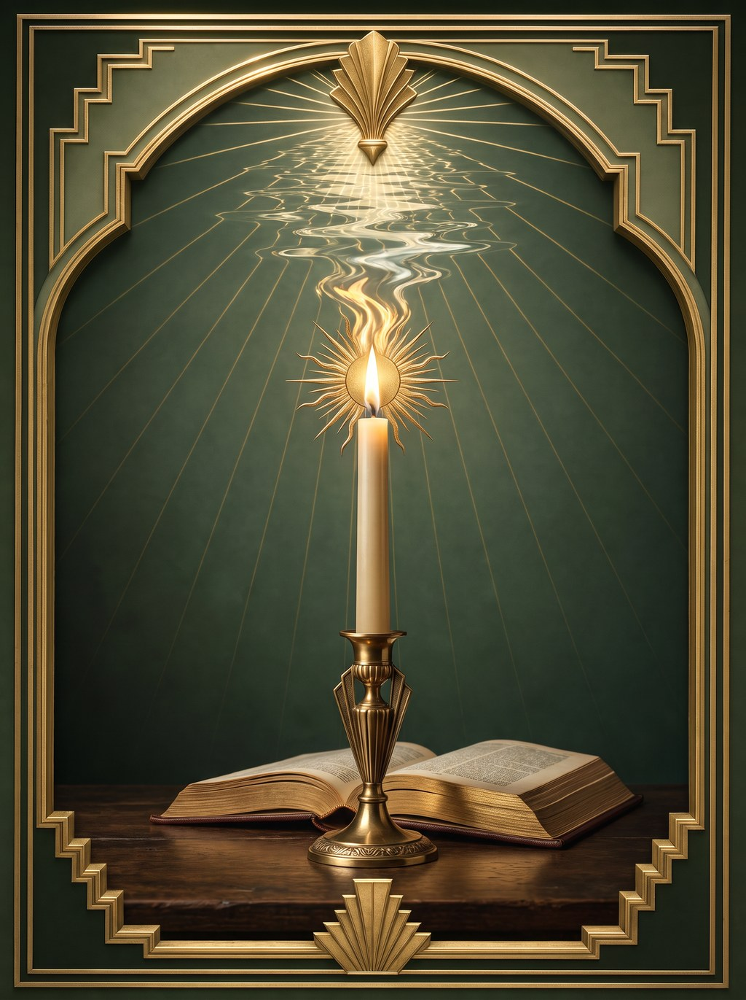
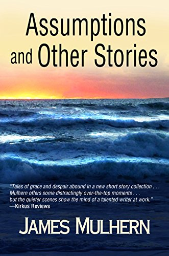

"The quieter scenes show the mind of a talented writer at work… Mulhern demonstrates considerable powers of description, particularly when portraying his saddest characters."
Kirkus Reviews
Assumptions and Other Stories
Essays: Criticism & Craft · No. I
By James Mulhern
How the biblical phrase for damnation becomes, in “Assumptions,” the shimmer over a baptism. The essay that opens Mulhern’s Essays: Criticism & Craft collection — tracing the moment judgment turns to grace.

About the Essay
Unquenchable Fire takes its title from the Gospels — the phrase used in Matthew and Mark for the fire of Gehenna, the fire that judgment cannot put out. Mulhern follows that phrase into his short story “Assumptions,” where it undergoes a quiet reversal: the fire of damnation becomes the shimmer of sunlight on water, as two women wade into the sea to be healed.
The essay traces a pattern that recurs across Mulhern’s fiction, poetry, and teaching — the deliberate conversion of fearsome, punitive imagery into imagery of mercy. Fire becomes sunlight. A crown of thorns becomes a laurel of sun-bleached peach fuzz. Stigmata becomes spilled juice on a child’s hands. A burial shroud becomes a housedress hung to dry. The Cross becomes a father’s crossed arms. Each substitution keeps the weight of the original image while emptying it of terror, and refilling it with tenderness.
It is the first essay in Essays: Criticism & Craft, Mulhern’s ongoing series of close readings of his own work, published on his author website alongside Water, and What It Carries, The Sacred in the Shabby, Altogether Beautiful, and nine further essays on recurring imagery, religious interpretation, and the working beliefs behind his fiction and poetry.
“The unquenchable fire of Gehenna becomes, in the space of a paragraph, the shimmer of sun on water — and a baptism.”
From “Unquenchable Fire”
The Imagery Traced
The Kirkus-reviewed short story collection that “Unquenchable Fire” reads closely — a Readers’ Favorite Award recipient.

Short Story Collection · Kirkus Reviews
The title story that anchors the essay — two women entering the sea to be cured, a scene that Mulhern reads against the doctrine of the Assumption and the biblical language of fire and judgment, asking what it means to grant an ordinary, flawed body the imagery reserved for the sinless one.
"The quieter scenes show the mind of a talented writer at work… Mulhern demonstrates considerable powers of description, particularly when portraying his saddest characters." — Kirkus ReviewsDownload the Cover All Books
Praised By
Recognition from Kirkus Reviews, Readers’ Favorite, The Missouri Review, and the Wishing Shelf Book Awards for the body of work “Unquenchable Fire” draws upon.
"The quieter scenes show the mind of a talented writer at work… Mulhern demonstrates considerable powers of description, particularly when portraying his saddest characters."
"Mulhern's writing displays all of the storytelling prowess of the contemporary Irish masters, yet manages to blend it in exquisitely with the use of modern day American settings."
"A luminous, beautifully told fairy tale grounded in history and elevated by spirit."
"A powerful, emotionally rich novel that weaves together Irish folklore, family trauma, faith, and the supernatural with remarkable grace."
"Impressed the editorial staff with its well-written, complex characters, themes of the piece, and its fantastic voice."
"A gripping, character-led story full of tiny twists and turns… the author knows his characters well — they literally jump off the page."
Continue Reading
“Unquenchable Fire” is free to read on the author site, alongside twelve companion essays on the recurring imagery, faith, and craft in James Mulhern’s fiction and poetry. Join the reading list for notice when new essays, stories, and books from Silver Current Press go live.
Everything needed to cover “Unquenchable Fire” and the Essays: Criticism & Craft collection — author bios, high-resolution covers, selected praise, and contact. Free to use with attribution to James Mulhern.
James Mulhern is a Philadelphia-based novelist, poet, and essayist. His Kirkus-starred novel Give Them Unquiet Dreams was named a Best Book of 2019. He is the founder of Silver Current Press.
James Mulhern is a Philadelphia-based novelist, poet, essayist, and professor emeritus. His fiction, poetry, and nonfiction have appeared in more than 300 international literary journals and anthologies. His novel Give Them Unquiet Dreams received a Kirkus starred review and was named one of Kirkus Reviews' Best Books of 2019. He was awarded a fully paid Creative Writing Fellowship to the University of Oxford and nominated for the Pushcart Prize. He is the founder of Silver Current Press.
"A luminous, beautifully told fairy tale grounded in history and elevated by spirit." — Kirkus Reviews (starred), on Give Them Unquiet Dreams
"The quieter scenes show the mind of a talented writer at work." — Kirkus Reviews, on Assumptions and Other Stories